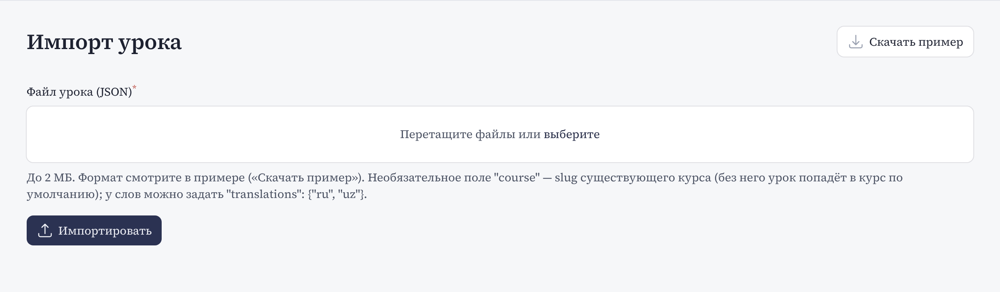
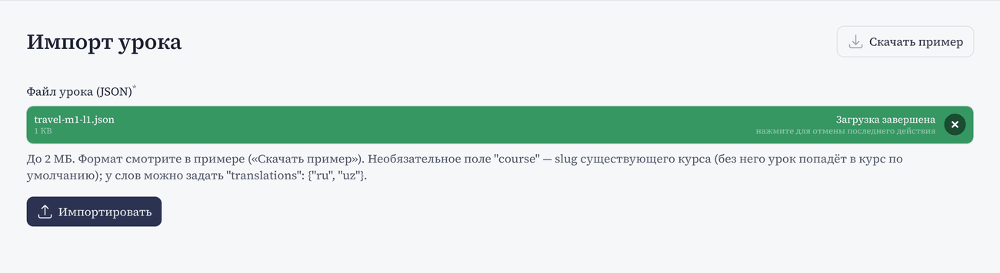
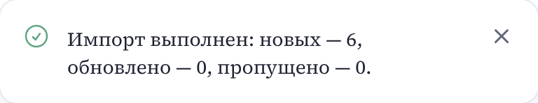
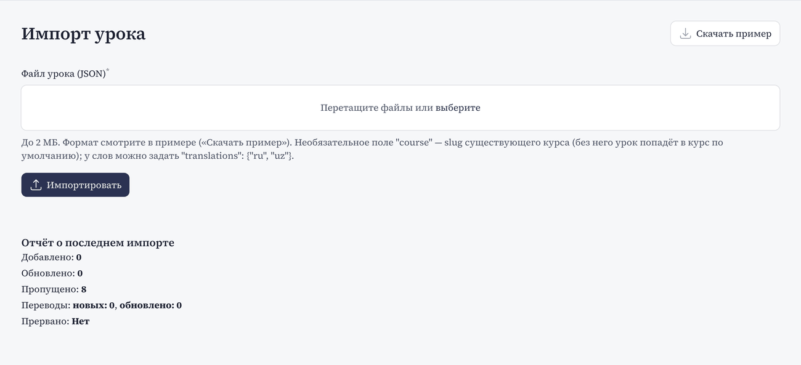
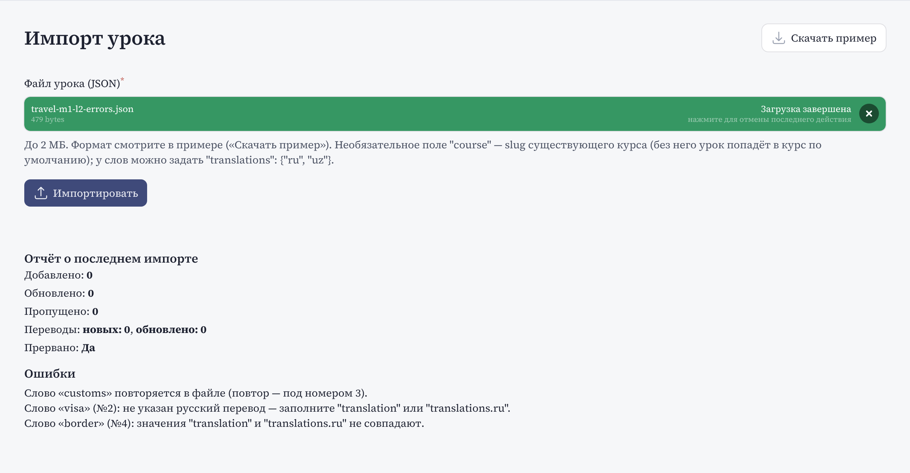
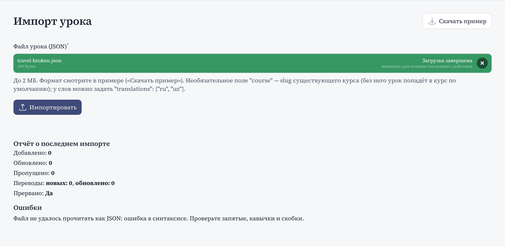

Страница Контент → Импорт урока загружает целый урок из файла JSON: модуль, урок и все слова с переводами, примерами и транскрипцией. Это основной способ наполнять курс. Страница доступна только администратору.
english-travel.sample-lesson.json.

| Строка отчёта | Что значит |
|---|---|
| Добавлено | новые слова урока |
| Обновлено | слова, которые уже были в этом уроке и изменились (перевод, пример, транскрипция и т. п.) |
| Пропущено | слова, которые уже есть и не изменились |
| Переводы | сколько переводов на языки добавлено и обновлено |
| Прервано | «Да» — в файле нашлась ошибка и не записано ничего |
| Ошибки | список ошибок с номером и текстом слова |


{
"course": "english-travel",
"stage": {"number": 1, "title": "В аэропорту"},
"lesson": {"number": 1, "title": "Регистрация на рейс"},
"words": [
{"word": "airport",
"translations": {"ru": "аэропорт", "uz": "aeroport"},
"example": "The airport is far from the city.",
"part_of_speech": "noun",
"transcription": "ˈeəpɔːt"},
{"word": "passport",
"translations": {"ru": "паспорт", "uz": "pasport"},
"example": "Show me your passport, please."}
]
}| Поле | Обязательно | Что значит |
|---|---|---|
course | нет | код существующего курса. Без него урок попадёт в курс по умолчанию (default). Неизвестный код — весь файл отклоняется |
stage.number, stage.title | номер — да, название — нет | модуль; если такого номера в курсе нет, он создаётся. Пустое название не стирает название существующего модуля |
lesson.number, lesson.title | номер — да | урок внутри модуля; создаётся, если его нет |
words[].word | да | английское слово; в одном файле слова не должны повторяться |
translations.ru или translation | русский — да | русский перевод можно дать любым из двух полей; если заданы оба, они должны совпадать |
translations.uz | нет (но нужен для публикации) | узбекский перевод |
example, example_translations | нет | основной пример и его переводы по языкам |
part_of_speech | нет | noun, verb, adjective, adverb, pronoun, preposition, conjunction, interjection |
transcription | нет | транскрипция |
hooks, examples, confusable_with | нет | крючки памяти по языкам, дополнительные примеры (до 10) и слова «Путают с» (до 10). Отсутствующее поле не трогает сохранённое; пустое — стирает |
Старые файлы без course и translations, а также файлы в старой схеме ("stage": 1, "lesson": 1, "vocabulary": [...]) тоже принимаются.
Если загрузить файл с теми же курсом, модулем и уроком, слова не задвоятся: совпадающие пропускаются, изменённые обновляются. Изменённый перевод перезаписывает сохранённый — даже исправленный вручную — и снимает с него отметку «Проверен». Это удобно: правьте пакет в файле и загружайте снова, изменённые тексты сами вернутся на проверку.
При любой ошибке не записывается ничего: исправьте файл и загрузите его снова целиком.


| Сообщение | Что исправить |
|---|---|
| «Файл не удалось прочитать как JSON: ошибка в синтаксисе…» | пропущена запятая, кавычка или скобка. Проверьте файл любым проверщиком JSON |
| «…неверная кодировка. Сохраните файл в UTF-8.» | пересохраните файл в UTF-8 (в Excel/Word — «Сохранить как», кодировка UTF-8) |
| «Файл больше 2 МБ.» | разделите урок на два файла |
| «Курс «…» не найден: сначала создайте его в разделе «Курсы».» | опечатка в course или курс ещё не создан |
| «Слово «…» повторяется в файле (повтор — под номером N).» | уберите повтор |
| «…не указан русский перевод…» | заполните translation или translations.ru |
| «…значения "translation" и "translations.ru" не совпадают.» | оставьте одно поле или сделайте их одинаковыми |
| «…язык «…» … не поддерживается.» | переводы — только ru и uz |
| «…есть перевод примера на язык «…», но нет перевода самого слова» | добавьте перевод слова на этот язык |
| «Ошибка в данных файла: …» | нарушена схема: неизвестная часть речи, больше 500 слов, нет номера урока и т. п. — текст после двоеточия говорит, что именно |
Слова в занятиях звучат из заранее записанных файлов. Если файла у слова ещё нет, мини-приложение произносит слово голосом телефона, а если на телефоне нет голоса — молчит. Записанный голос звучит лучше, поэтому перед публикацией проверяют, что курс озвучен.
Запускать озвучку вручную обычно не нужно. Приложение само ставит слова в очередь на озвучку, и она идёт в фоне — как правило, файл готов примерно через минуту:
Пока файл не готов, ученик слышит слово голосом телефона. Каждую ночь в 02:30 UTC (7:30 по Ташкенту) приложение сверяет слова курсов и ставит в очередь те, у которых нет готовой озвучки: так подбирается всё, что по какой-то причине пропустили.
Не озвучиваются: выключенные слова (их файл сохраняется, слово можно включить обратно) и слова собственных колод учеников — их ученик всегда слышит голосом телефона.
Если на сервере озвучка выключена, слова в очередь не ставятся вовсе, и ученики слышат голос телефона. Включает и настраивает озвучку технический администратор. Диктанты при выключенной озвучке получают аудио «Ошибка» и ученикам не выдаются.
audio:coverage печатает по каждому модулю, сколько активных слов озвучено, и итог в процентах.audio:pregenerate, приложение «Для технического администратора»): она ставит только слова без готового файла.Если опубликованный курс или курс на проверке озвучен меньше чем на 95 %, на главной панели в «Требуют внимания» появится строка «код-курса · озвучка» с процентом и числом слов без озвучки. Строка исчезнет в течение 5 минут после того, как озвучка догонит. Другие строки об озвучке (расход за месяц, очередь, отказ Google) описаны в главе «Главная панель».